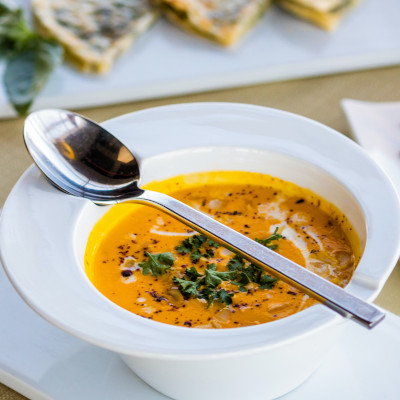

Basic Chicken Soup

Description
A recipe for simple, wholesome, banish-that-cold chicken soup.
Ingredients
- 1/2 pound uncooked chicken breast tenders, cut into small pieces
- 1/2 cup finely chopped carrots
- 2 stalks chopped celery
- 1 medium yellow onion, chopped
- 1 1/2 teaspoons Italian seasoning
- 1/2 teaspoon oregano
- 1/4 teaspoon salt
- 1/8 teaspoon pepper
- 2 cans chicken broth (14 oz)
- 4 ounces cooked pasta noodles
- 1/2 bundle of baby spinach, rinsed and torn into pieces
- Olive oil for cooking
Steps
- In a large pot, heat olive oil over medium heat and cook chicken until no longer pink.
- Add the chopped carrots, onions, celery, oregano, salt, and pepper. Cook until carrots and onions are tender.
- Add chicken broth and simmer for about ten minutes.
- Add cooked noodles and spinach. Simmer until spinach is wilted, turn off heat, and serve.